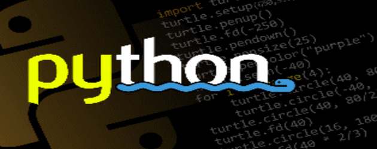

Python
网站首页
Matlab
Course
Other
待更新
待更新
待更新
待更新
待更新
待更新

PYTHON
Python 语言 是一个由编程牛人领导设计并开发的编程语言
Python 语言 是一个有开放 、 开源精神的编程语言 Python
语言 应用于火星探测 、 搜索引擎 、 引力波分析等众多领域
PYTHON
拥有者：Python Software Foundation(PSF)
创立者：Guido van Rossum
实用例程
图片压缩